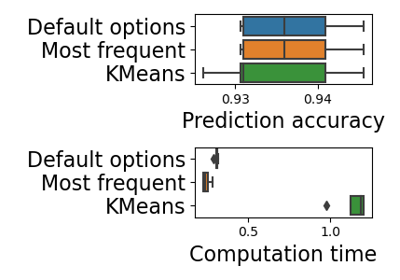

dirty_cat.datasets.fetch_open_payments¶
- dirty_cat.datasets.fetch_open_payments(load_dataframe=True, directory=None)[source]¶
Fetches the open payments dataset (classification), available at https://openml.org/d/42738
- Description of the dataset:
Payments given by healthcare manufacturing companies to medical doctors or hospitals.
- Returns:
- DatasetAll
If load_dataframe=True
- DatasetInfoOnly
If load_dataframe=False
Examples using dirty_cat.datasets.fetch_open_payments¶

Scalability considerations for similarity encoding
Scalability considerations for similarity encoding